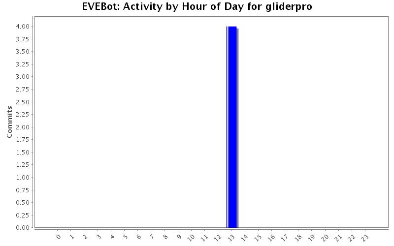
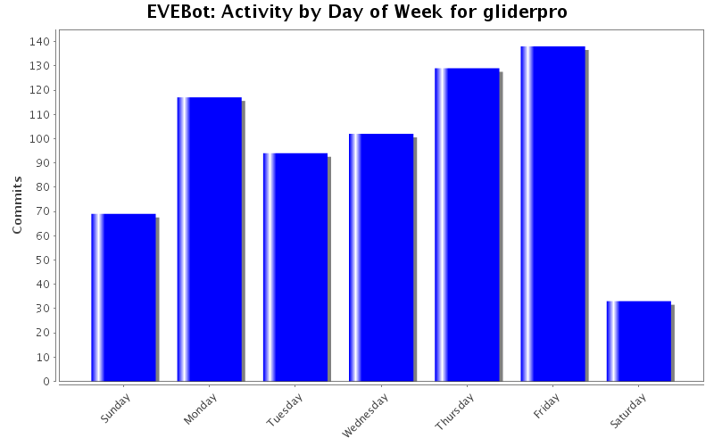
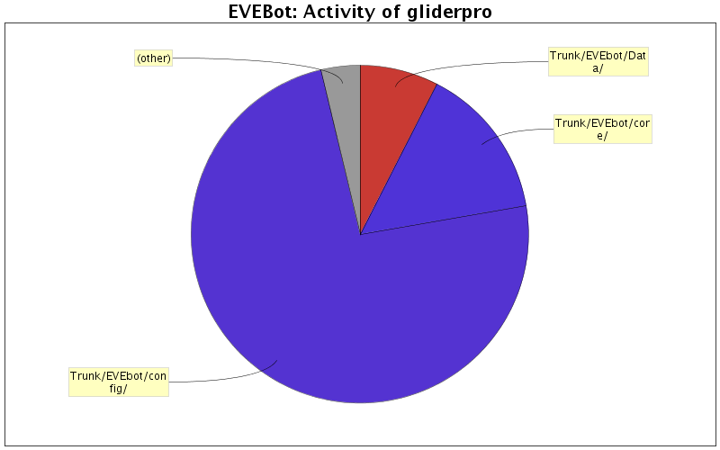

| Directory | Changes | Lines of Code | Lines per Change |
|---|---|---|---|
| Totals | 608 (100.0%) | 114246 (100.0%) | 187.9 |
| Trunk/EVEbot/config/ | 15 (2.5%) | 85121 (74.5%) | 5674.7 |
| Trunk/EVEbot/core/ | 430 (70.7%) | 16977 (14.9%) | 39.4 |
| Trunk/EVEbot/Data/ | 2 (0.3%) | 8650 (7.6%) | 4325.0 |
| Trunk/EVEbot/interface/ | 36 (5.9%) | 1268 (1.1%) | 35.2 |
| Trunk/EVEbot/ | 36 (5.9%) | 504 (0.4%) | 14.0 |
| Trunk/EVEbot/Behaviors/ | 29 (4.8%) | 476 (0.4%) | 16.4 |
| Trunk/EVEbot/Threads/ | 15 (2.5%) | 337 (0.3%) | 22.4 |
| Trunk/EVEbot/Modes/ | 3 (0.5%) | 275 (0.2%) | 91.6 |
| Trunk/EVEbot/interface/eveskin/ | 5 (0.8%) | 149 (0.1%) | 29.8 |
| branches/stable/Behaviors/ | 1 (0.2%) | 111 (0.1%) | 111.0 |
| Trunk/EVEbot/test/ | 5 (0.8%) | 108 (0.1%) | 21.6 |
| Trunk/EVEbot/Testcases/ | 3 (0.5%) | 93 (0.1%) | 31.0 |
| Install/EVEBot/ | 1 (0.2%) | 86 (0.1%) | 86.0 |
| branches/stable/core/ | 6 (1.0%) | 68 (0.1%) | 11.3 |
| branches/hauler_work/core/ | 4 (0.7%) | 18 (0.0%) | 4.5 |
| branches/hauler_work/interface/ | 4 (0.7%) | 3 (0.0%) | 0.7 |
| tags/trunk_2010_07_21/ | 2 (0.3%) | 2 (0.0%) | 1.0 |
| tags/trunk_2010_07_21/Behaviors/ | 2 (0.3%) | 0 (0.0%) | 0.0 |
| Trunk/EVEbot/sounds/ | 6 (1.0%) | 0 (0.0%) | 0.0 |
| Trunk/EVEbot/interface/eveskin/MainGUI/ | 2 (0.3%) | 0 (0.0%) | 0.0 |
| Trunk/EVEbot/Behaviors/UserDefined/ | 1 (0.2%) | 0 (0.0%) | 0.0 |

missed a spot.
1 lines of code changed in 1 file:
Added code to loot while ratting. Only works for ships with lasers since it doesn't support ammo restocking yet. This feature is disabled by default.
111 lines of code changed in 1 file:
don't target convoy ships
5 lines of code changed in 2 files:
don't target convoy ships
2 lines of code changed in 1 file:
Added call to Ship:OrbitAtOptimal in Combat:Fight.
Added Ship:OrbitAtOptimal method.
Updated Ship:Reload_Weapons to handle laser turrets better.
62 lines of code changed in 2 files:
Dynamically create includes.iss and globals.iss for behavior modules.
90 lines of code changed in 8 files:
Working on getting the miner to run again.
This version uses EntityCache for asteroid detection and the Navigator thread for movement.
If you manually target asteroids it should approach and mine them. Will add targeting next.
144 lines of code changed in 5 files:
Added debug messages for mission blacklist.
3 lines of code changed in 1 file:
Updated Ship.TravelToSystem to use the new ClearAllWaypoints method.
1 lines of code changed in 1 file:
Added note with location of ISXIRC extension download.
4 lines of code changed in 2 files:
Market object fixes.
126 lines of code changed in 3 files:
Fixed obj_EVEDB_StationID.
Added test case for obj_EVEDB_StationID.
34 lines of code changed in 2 files:
Fixed EVEDB_Items.TypeID
Fixed GetMyBuyOrders
Converted Testcases/test_evebot_itemdb.iss to use relative path.
33 lines of code changed in 3 files:
Added a UI element to disable display of local chat in EveBot.
Local chat is still logged to the EveBot log file.
28 lines of code changed in 4 files:
Made private behaviors sound less elitist.
5 lines of code changed in 1 file:
Removed the item list from obj_Market.iss.
Made integration of private behaviors more suitable for dual SVN repositories.
EVEBot now loads behaviors from a directory named "private" in addition to the "behaviors" directory.
37 lines of code changed in 3 files:
Added code to populate the bot mode combo box based on the bot modules index.
12 lines of code changed in 1 file:
minor fix to logging
10 lines of code changed in 1 file:
Updated obj_Market.iss to include new market routines.
277 lines of code changed in 1 file:
Added code to make all behaviors optional.
Added code to dynamically create behavior objects.
31 lines of code changed in 1 file:
(284 more)